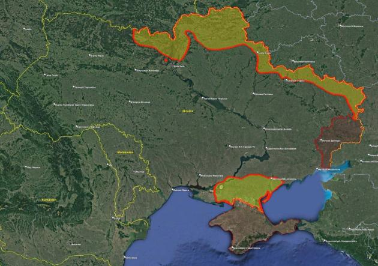

[08:54] Kyiv: the resistance continues…

[08:54] Kyiv: honestly, i didn’t expect the ukrainian army to do so well
[08:55] Kyiv: really thought russia could blitzkrieg through the entire country in one day
[08:55] Kyiv: with barely any casualties
[11:00] Me: Which regions are the ones with Ukrainian separatists
[11:00] Me: It’s only the two, right
[11:00] Kyiv: far right
[11:00] Kyiv: donetsk and lugansk
[11:25] Me: i guess beyond those it’s like
[11:25] Me: at least an actual fight